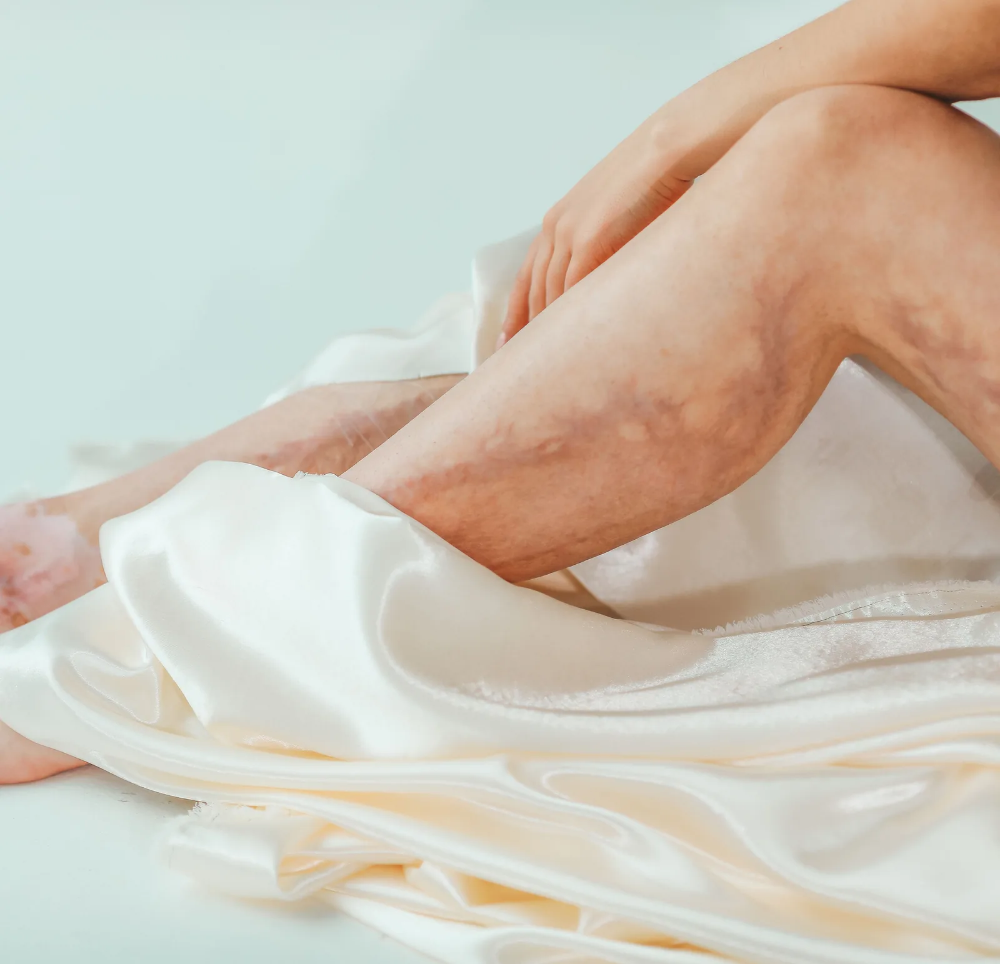

Piernas hinchadas al final del día: cuándo es normal y cuándo consultar
Terminar la jornada con las piernas pesadas e hinchadas es tan común que muchas personas asumen que es "lo normal". A veces lo es, pero otras veces es la primera señal de que tus venas necesitan atención. Aquí te ayudamos a distinguirlo.

Al final del día, la gravedad ha estado tirando de la sangre y los líquidos hacia tus piernas durante horas. Por eso es frecuente notar los tobillos un poco más marcados, el calzado más ajustado o una sensación de pesadez. En muchos casos se trata de algo pasajero. La clave está en observar el patrón: cada cuánto ocurre, si mejora con el descanso y si aparece en una pierna o en las dos.
Cuándo la hinchazón suele ser normal
Una hinchazón leve puede aparecer en situaciones cotidianas y desaparecer sola:
- Después de muchas horas de pie o sentada, por ejemplo en viajes largos o jornadas de trabajo.
- Con el calor, que dilata los vasos sanguíneos.
- En días de mayor consumo de sal o cambios hormonales del ciclo menstrual.
- Cuando mejora por la mañana, tras haber tenido las piernas en horizontal durante la noche.
Si la hinchazón es leve, simétrica en ambas piernas y se resuelve con el descanso, suele ser una respuesta normal del cuerpo.
Señales de que conviene consultar
Hay patrones que sí merecen una valoración profesional, porque pueden indicar insuficiencia venosa u otra causa que conviene estudiar:
- La hinchazón es diaria y persistente, y ya no mejora del todo por la mañana.
- Se acompaña de pesadez, calambres nocturnos, picor o dolor en las piernas.
- Aparecen várices, arañitas vasculares o cambios en el color de la piel de tobillos y pantorrillas.
- La piel se vuelve tirante, brillante o endurecida, o aparecen heridas que tardan en cerrar.
Las piernas pesadas e hinchadas de forma habitual no son "algo con lo que hay que vivir": son un motivo válido para revisar la salud de tus venas.
Qué puedes hacer en tu día a día
Algunas medidas sencillas ayudan a aliviar la pesadez y a cuidar tu circulación, aunque no sustituyen el diagnóstico si el problema persiste:
- Muévete con frecuencia: caminar activa la "bomba" de la pantorrilla que impulsa la sangre de vuelta al corazón.
- Eleva las piernas unos minutos al final del día, por encima del nivel del corazón.
- Evita estar muchas horas inmóvil, de pie o sentada; haz pausas para mover los pies y tobillos.
- Hidrátate bien y modera la sal.
- Las medias de compresión pueden ser de gran ayuda, pero conviene que un profesional indique el tipo y la graduación adecuados para tu caso.
Cómo se estudia en Seravena
Cuando la hinchazón es persistente, el estudio de referencia es el eco doppler venoso: una prueba indolora y sin radiación que permite ver cómo circula la sangre en tus venas y detectar si hay reflujo o insuficiencia. A partir de ese diagnóstico se define un plan a tu medida, que hoy puede ser ambulatorio y sin cirugía en muchos casos.
Entender qué le pasa a tus piernas es el primer paso para dejar de convivir con la molestia. Si te reconoces en las señales de arriba, una valoración despeja dudas y te da un camino claro.
Preguntas frecuentes
¿Cuándo es normal tener las piernas hinchadas?
Una hinchazón leve puede aparecer tras muchas horas de pie o sentada, con el calor, en días de mayor consumo de sal o con los cambios hormonales del ciclo menstrual. Si es leve, simétrica y mejora por la mañana tras haber tenido las piernas en horizontal, suele ser pasajera.
¿Cuándo debo preocuparme por la hinchazón de las piernas?
Cuando es diaria y persistente y ya no mejora del todo por la mañana, si se acompaña de pesadez, calambres nocturnos, picor o dolor, si aparecen várices, arañitas o cambios en el color de la piel de tobillos y pantorrillas, o si la piel se vuelve tirante y brillante.
¿Qué examen se hace cuando la hinchazón es persistente?
El estudio de referencia es el eco doppler venoso, una prueba indolora y sin radiación que permite ver cómo circula la sangre en tus venas y detectar si hay reflujo o insuficiencia. A partir de ese diagnóstico se define un plan a tu medida.